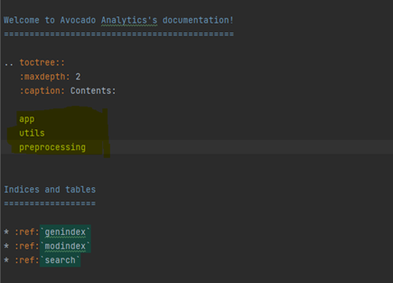

Documentation with Sphinx
Project with Sphinx documentation (from scratch)
Explaining how to create a by Sphinx documented project helps to understand how Sphinx works, and can be useful if any new repository needs to be created.
Make a project with a virtual environment (and make sure that you are navigated into this project within the command prompt).
Activate the virtual environment
In command prompt perform
pip install sphinx pip install numpydoc pip install sphinx-rtd-theme mkdir docs (in the project directory) mkdir sphinx (in the project) cd sphinx (navigate to sphinx folder)
During the quickstart, say
[y], when asked to have separate build and source folderssphinx-quickstartMake some changes in the
conf.pyfileAdd extensions
'sphinx.ext.autodoc', 'numpydoc'
Uncomment
import os import sys
Add the following code
# ##### -> Code for the following structure of code folder: # folder with app.py and then all the folders other code files in this folder # or in sub-folders underneath the src folder directory = '../../src/' # How to get from the conf.py file to the code # Add the app.py to the sys.path which the conf.py file needs to make automatic documentation sys.path.insert(0, os.path.abspath('../../src/')) # Add all sub-folders in the src folder which contain the python files # This way all the python files can be accessed. for root, subdirectories, files in os.walk(directory): for subdirectory in subdirectories: sys.path.insert(0, os.path.abspath(os.path.join(root, subdirectory))) for file in files: # print(os.path.join(root, file)) pass
Change the theme
html_theme = 'sphinx_rtd_theme'
Note
Add the following code makes sure that the conf.py file can actually find all the python files that it needs to supply to autodoc.
Autodoc basically receives some python files and extracts all the docstrings to form a good-looking documentation page for these python files.
It needs to be able to know where these files are located. Otherwise it cannot create the documentation for it. It now uses src
as the folder that contains all the code. All files and in this src folder and the sub-folders of src should be python files. Only these files
python files will be included in the documentation. Unless other files are inserted or the code is changed, to include even more files.
Warning
All python files not included in the src folder will not be included in the documentation.
In order to now generate the documentation of the project, a few commands need to be executed within the command prompt.
Make sure that all the files that need documentation are added to the
sphinx/sourcedirectory with the use of the following commands:sphinx-apidoc -o sphinx\source src sphinx-apidoc -o sphinx\source src\utils_folder same for all folders in ``src`` folder
Note
sphinx-apidoc -o sphinx\source src only make sure that all the loose python files in the src directory are converted
to .rst files and saved into the sphinx\source directory. For the python files in sub-folder in the src directory,
the same command needs to be ran for each of the folder within the src folder.
Navigate to the sphinx folder and call:
make htmlIf anything goes wrong, or you need to reload the html files. You can clean (empty) the
sphinx\buildfolder and regenerate the html files, by calling:make clean make html
In the
sphinx/sourcefolder, you can create new files, and pages for the documentation which are not automatically generated. Using, this property, you can create additional more specific and detailed documentation pages. For example to explain how to use create documentation for the KGA project.In the index page, you can create the landing page for the documentation.
A final important topic is the
toctrees. These are properties of the.rstfiles, which help to link everything together into a final documentation webpage. The use of these toctrees will be discussed later in this documentation.
Depth and Hierarchy of Documentation Page
Toctrees help you to create a hierarchy of pages and a contents table in the documentation page. On the index page, the toctree is automatically created,
you just need to fill in the names of all the .rst files, which you want to include. In the self-made .rst files, you can also add a toctree, to add even
more depth to the hierarchy. Headings of a .rst file are also of importance for the hierarchy of the documentation page. Subsections are added to the table of contents
and subsubsections can also be added depending on the maximum depth of the toctree.
Here we see an the easiest example of the a hierarchy:
{kind=link}
And this is how it is rendered:
{kind=link}
You can also create a landing page for all the code documentation, and include all the code files in this toctree. This way you create a deeper hierarchy:
{kind=link}

This is rendered as follows in the table of contents and as separate pages in the documentation. The different pages are also rendered in the contents tab on the left side of the page.
{kind=link}
Another important way to create hierarchy is by means of headings and sections. You can create headings, with
===, --- and ~~~. These headings are also included in the table of contents.
{kind=link}
Headings are rendered like this in the table of contents:
{kind=link}
And like this on on the page:
{kind=link}
Landing Page and Extra Documentation
Landing Page
The landing page of the documentation is the page that you see when you first open the documentation. This
is just the index.rst file. You can customize this landing page, by writing in the index.rst file with the use of
reStructuredText.
Extra Documentation
In order to create extra documentation, in other words documentation which was not automatically generated from docstrings, you can just create new
.rst files in the sphinx/source folder. These files should also be customized using reStructuredText. By referring to these extra documentation files in some toctree,
you include these files into the documentation. Hierarchy works in the exact same way as for automatically generated .rst files. This How to Document section is an example of such extra documentation.
It is important to learn about all the topics that are crucial to the development of the project.
Note
When you add images, you need to make sure that the files for the images are put into the _static directory of the source folder. When creating the html file
this immediately copies the _static files to the build directory.
Numpy Docstrings (PyCharm)
If you work in PyCharm it is useful to turn on NumPy docstrings. This causes the PyCharm to instantly generate the NumPy docstring layout.
You turn this option on by going to: File > Settings > Tools > Python Integrated Tools > Docstrings > Docstring format > *select* NumPy